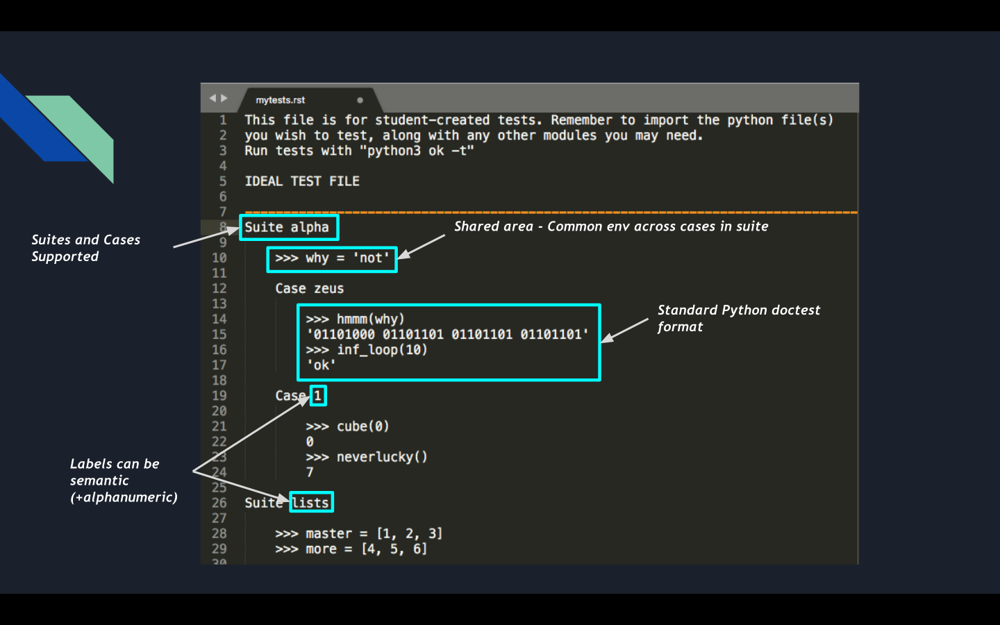

使用 Ok
CS 61A 使用一个名为 ok 的程序来测试和备份作业
、实验和项目。
每个编程作业都将包括一个 .zip 压缩包，其中
包含以下内容：
- 起始代码
ok的副本
解压缩压缩包的内容后，你可以开始你的作业。
使用 Ok 登录
要开始，打开你的终端，并使用 cd 进入正确的目录
（当你在正确的目录中 ls 时，你应该看到一个名为 ok 的文件）。
尝试以下命令：
python3 ok如 实验0 环境设置 部分所述，如果
python3命令 不起作用，请尝试使用python或py。
这将运行测试（如果测试最初失败，请不要担心；你 还没有编写代码！）。
第一次运行 ok 时，系统会询问你的 bCourses 电子邮件。这应该是你的伯克利电子邮件地址（以 @berkeley.edu 结尾）。如果你有多个，请使用你登录
bConnected Google 帐户时使用的那个。
如果你没有伯克利电子邮件地址，你可以通过登录你的 CalNet 帐户在这里创建一个。
输入电子邮件后，你的 Web 浏览器将打开一个身份验证页面。点击"接受"以验证 ok。
故障排除
未注册
如果你看到一条错误消息，表明你未注册课程， 请确保你使用的电子邮件地址会出现在课程名单上。如果你使用的电子邮件是正确的，你可以继续使用该电子邮件；你的提交仍将被保存。你必须在 Ed Discussion 上为该电子邮件地址创建一个私人帖子以注册。
错误的电子邮件
如果你输入电子邮件不正确，你可以使用以下命令重新验证：
python3 ok --authenticate无法验证/浏览器问题/重定向到 127.0.0.1/等。
尝试使用 --no-browser 运行：
python3 ok --authenticate --no-browser另外，请仔细检查你的互联网连接。如果你在校园内，请尝试使用 eduroam。
崩溃或未加载
确保你安装了 64 位版本的 Python 3。你可以通过在终端中运行以下命令来检查 你是否安装了不正确的 32 位版本。
python3 -c "import struct,platform;print(8 * struct.calcsize('P'), platform.python_version())"崩溃并出现类似 ModuleNotFound ... urllib3 not found 的错误
尝试安装 3.8 到 3.11（含）之间的任何版本的 Python，并卸载 Python 3.12。
我们建议安装 Python 3.11.9。向下滚动到文件部分并下载适用于你的操作系统（Mac/Windows）的安装程序，不要下载 tarball 文件。
崩溃并出现类似 PermissionError: [Errno 13] Permission denied: '/Users/<user_name>/.config/ok 的错误
尝试运行 sudo chmod -R ugo+rwx /Users/<user_name>/.config，其中 <user_name> 替换为你的用户名，然后重试 OkPy 命令。
使用 Ok 进行测试
编写一些代码后，你可以通过各种方式使用 ok 测试你的代码。
测试特定问题
要测试特定问题，请使用 -q 选项和问题名称：
python3 ok -q ### Q1测试所有问题
你可以使用以下命令运行所有测试：
python3 ok显示所有测试
默认情况下，只会出现 失败 的测试。如果你想知道你在所有测试上的表现
，你可以使用 -v 选项：
python3 ok -v本地测试
如果你不想将进度发送到我们的服务器或者你在登录时遇到任何问题
，请添加 --local 标志以阻止所有通信：
python3 ok --local添加你自己的测试

你可以编写自己的测试并使用ok 运行它们。默认情况下，测试文件将命名为 mytests.rst。你可以使用不同的名称，但在运行测试时你需要指定它。
运行你自己的测试
要在 mytests.rst 中运行所有测试并显示详细结果：
python3 ok -t -v如果你将测试放在不同的文件中或将测试拆分到多个文件中：
python3 ok -t your_new_filename.rst要仅运行 mytests.rst 中套件 1 案例 1 的测试：
python3 ok -t --suite 1 --case 1你可能已经注意到你的测试有一个"测试覆盖率"百分比（注意，覆盖率统计仅在进行所有测试时返回）。这是你的测试的 代码覆盖率 的度量。
要获得关于你应该测试哪些行以提高覆盖率的指导：
python3 ok -t -cov代码覆盖率不包括 ok 测试，所以覆盖率百分比可能
在现实中更高。
虽然代码覆盖率是一个有用的工具，但你不应该执着于这个数字。 最好编写帮助你完成问题并使生活更轻松的测试，而不是追求更高的覆盖率。
查看备份
你可以访问 okpy.org 查看你的备份。确保你使用与验证时相同的 bCourses 电子邮件登录。